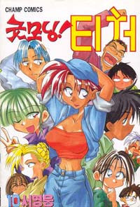

제 71화: 이번 축제엔 무엇을 할까요~?
제 72화: 아~ 날씨 참 좋다~.
제 73화: 우리 학교 축제날 비온 적 없었다니까...
제 74화: 개막! 18회 일출제
제 75화: 친구의 목소리였으니까...
제 76화: 남에게 힘이 되어준다는 것
제 77화: 나는... 장래에 뭐가 될까...?
제 78화: 선생님! 전 아직 어른이 아닌데요!
제 79화: 쌍코피!!!
제 80화: 하루 두시간이면, 일년이면 한달??!!
제 81화: 정경희 선생님의 이사.